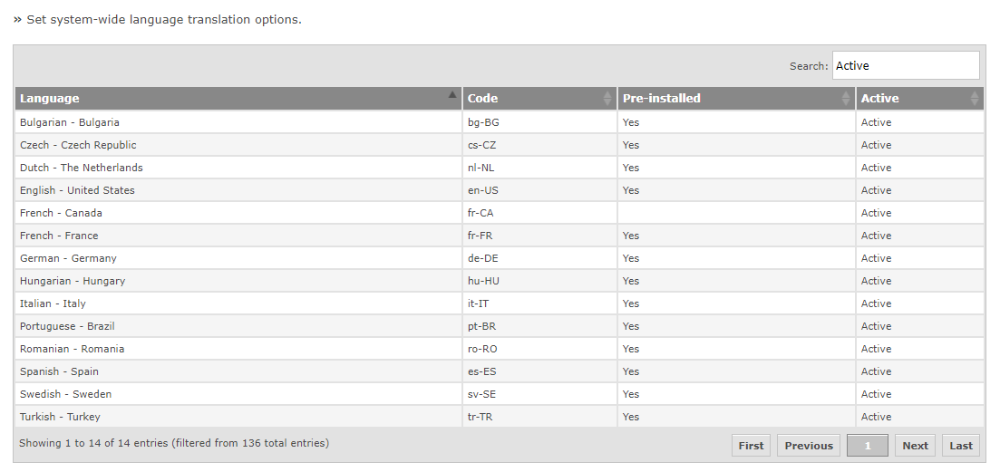

Gemini supports multiple languages, set at the user's profile level. Providing the correct translation file is provided/created (see translations), you can enable unlimited languages to suit your organizations needs
By default, the page is loaded with a filter set for the Active languages, but this can be reset by clearing the Active

To activate a language, click on the Active column and the inline editing will appear. Check the box and it will be activated. The newly activated language will be assigned an initial template based on its language and culture code. For example, if you activated Canadian French, the initial starter file would use the French-France version as it is the closest match. Based on the FR language. If there is no language available, you will get the default based on the US english.